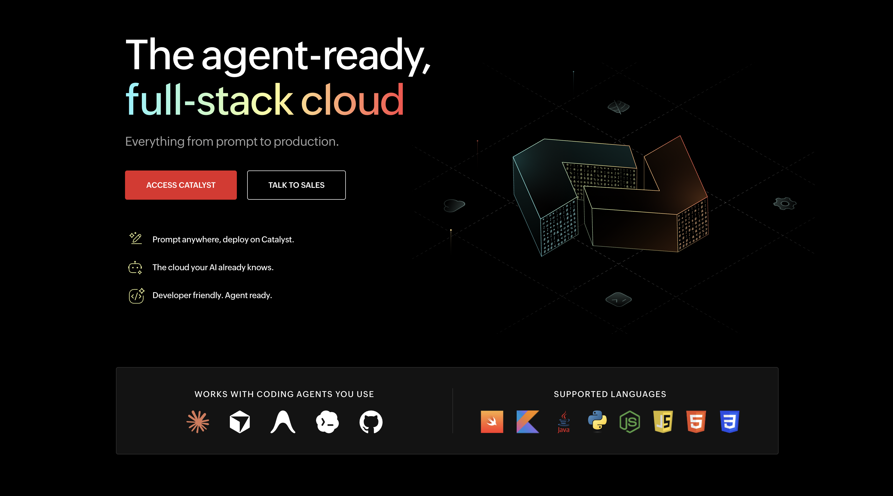
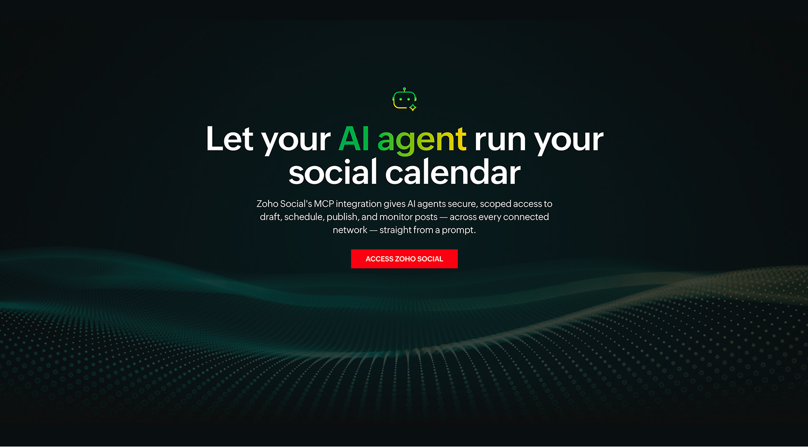
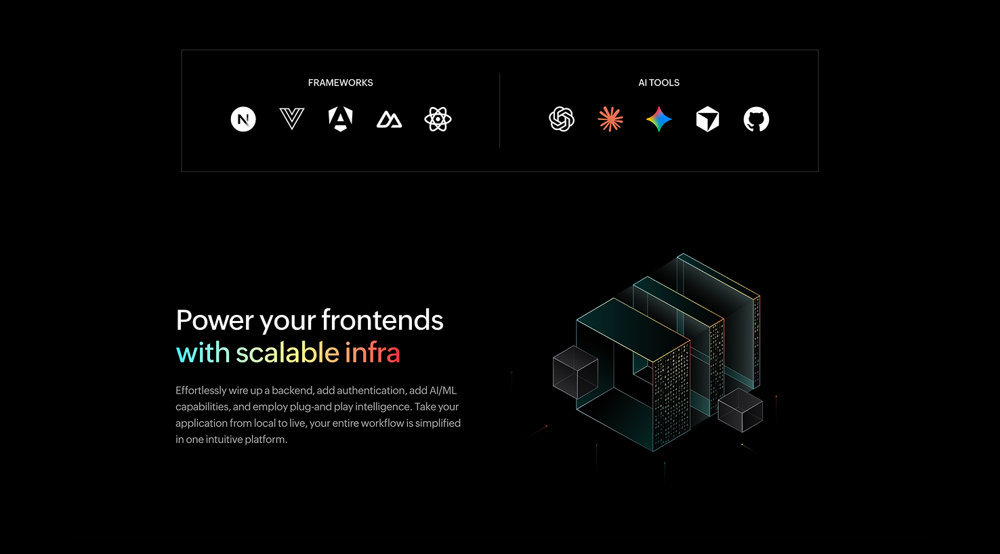
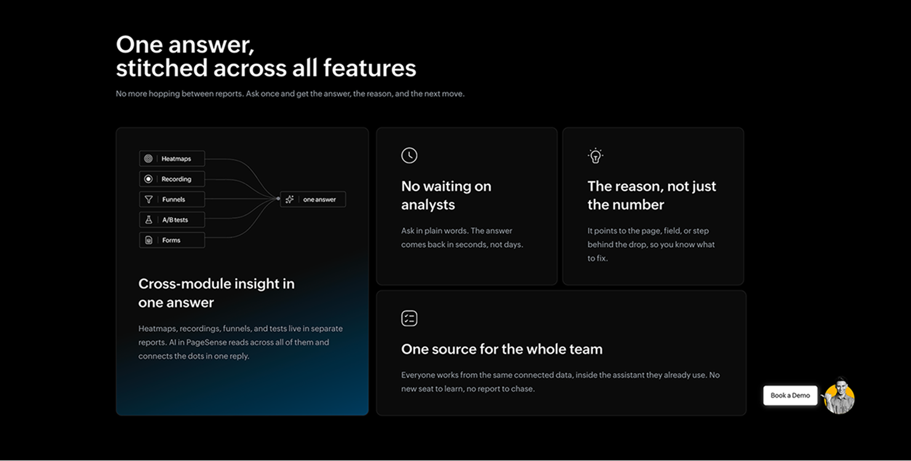
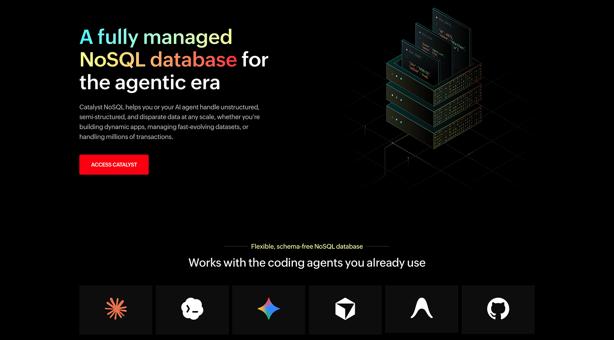

I design experiences that work well & get built right.
UI/UX Designer & Front-End Developer creating intuitive, responsive and accessible web experiences — from wireframes to high-fidelity UI and code.
Selected work
A few recent projects.

Catalyst by Zoho
Marketing site for Zoho's full-stack cloud platform, covering the product suite, agent integrations, and pricing.

Zoho Social MCP
Product page and UI mockups showing how AI agents draft, schedule, and publish posts through Zoho Social's MCP integration.

Catalyst Slate
Product landing page for Catalyst's frontend hosting service, including framework support and a live pricing calculator.

Zoho PageSense MCP
Landing page for PageSense's AI-powered analytics MCP server, covering heatmaps, experiments, and cross-module insights.

Catalyst NoSQL
Landing page for Catalyst's managed NoSQL database, explaining use cases and querying capabilities for developers.
From idea
to experience.
I keep the process structured while leaving enough room for exploration and iteration.
Understand
Goals, users, requirements and constraints.
Explore
Flows, information architecture and concepts.
Design
Wireframes, UI, components and responsive states.
Prototype
Interactions that communicate the intended experience.
Build
Design-aware front-end implementation and refinement.
Design thinking
with a builder's mindset.
UI/UX Design
Wireframes, visual design, prototypes, interaction patterns and user-focused interfaces.
Design Systems
Reusable components, Auto Layout, consistent patterns and scalable UI foundations.
Web & Front-End
HTML5, CSS3, JavaScript, responsive layouts, WordPress and Webflow.
Accessibility
WCAG-aware design with attention to usability, contrast and inclusive experiences.
Developer Collaboration
Designing with implementation in mind and working closely with developers.
AI-Assisted Workflow
Using Claude and ChatGPT to accelerate repetitive tasks, exploration and development workflows.
I don't stop at the design file.
My front-end background helps me think about responsiveness, reusable components, accessibility and implementation while I design.
Designer.
Developer.
Problem solver.
I'm a UI/UX Designer and Front-End Developer who enjoys working at the intersection of design and technology. My development background influences how I design — I think about responsive behavior, accessibility, reusable components and implementation from the beginning.
I work primarily with Figma, HTML, CSS, JavaScript, WordPress, Webflow and AI-assisted tools to turn ideas into polished digital experiences.
Have a product
worth designing?
I'm open to UI/UX, web design and front-end opportunities where thoughtful design can create measurable impact.